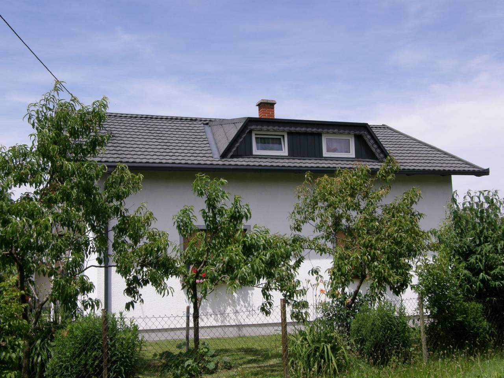
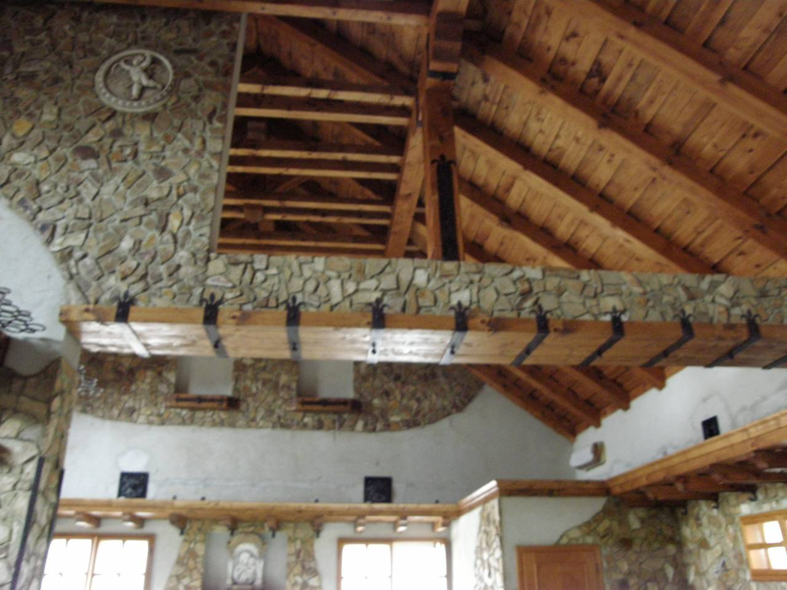
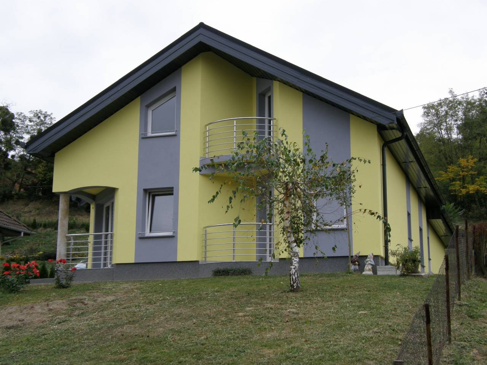
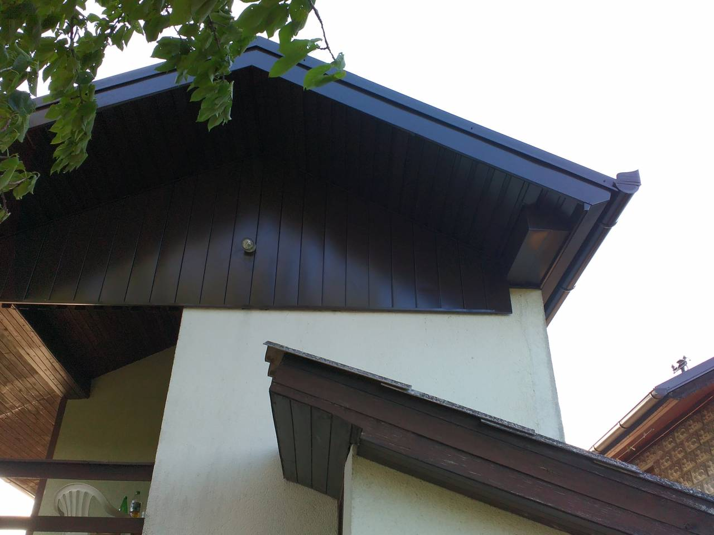
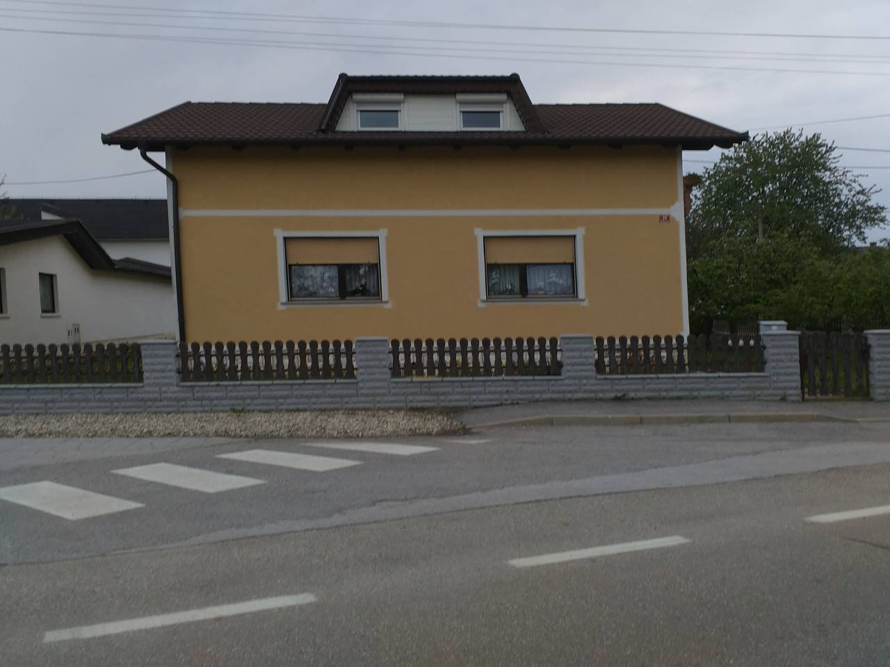

KrovstvoStrehe in kritine
Strehe pokrivamo z jeklenimi kritinami, opečno kritino, tegolo, valovitimi salonitkami in drugimi kritinami.
Krovstvo, kleparstvo in tesarstvo
Kleparstvo - krovstvo Alojz Kavaš s.p. iz Bakovcev pokriva strehe, po navedbah podjetja od leta 1989. Kritina, žlebovi in obrobe, napušč, frčade, dimniki ter lesene in kovinske konstrukcije: vse iz ene delavnice, z nasvetom pri izbiri.

Opis storitev je povzet po predstavitvi podjetja. Za natančen obseg se dogovorimo na ogledu.
Strehe pokrivamo z jeklenimi kritinami, opečno kritino, tegolo, valovitimi salonitkami in drugimi kritinami.
Izdelava in montaža kleparskih izdelkov: žlebovi, razne obrobe, oblačenje napušča, strelovodi in podobno.
Izdelava lesenih in kovinskih konstrukcij ter ravnih streh.
Izdelava pergol in raznih napuščev.
Izdelava in obloga frčad.
Pločevinaste obloge dimnikov.



Podjetje Kleparstvo - krovstvo Alojz Kavaš s.p. je po navedbah podjetja ustanovljeno leta 1989 (v poslovnem registru od leta 2003) in pokriva strehe v severovzhodni Sloveniji.
Poleg prekrivanja streh izdelujemo tudi različne kleparske izdelke iz različnih materialov, za katere nudimo tudi montažo. Opravljamo pa tudi različne lesene in kovinske konstrukcije.
Naš namen je, da so stranke zadovoljne, zato jim pri izbiri streh in konstrukcij svetujemo.Iz predstavitve podjetja
Izbor lastnih fotografij podjetja z izvedenih objektov.









Pokličite ali pišite. Svetujemo pri izbiri strehe in konstrukcije.